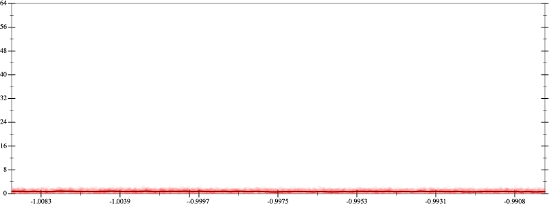
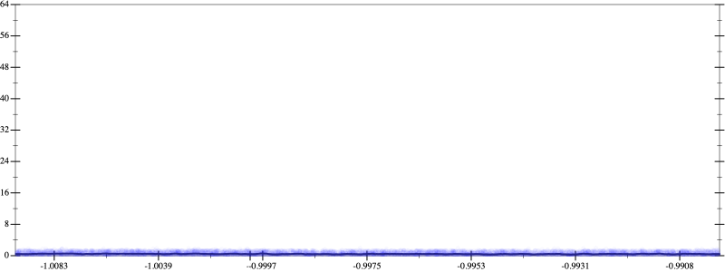
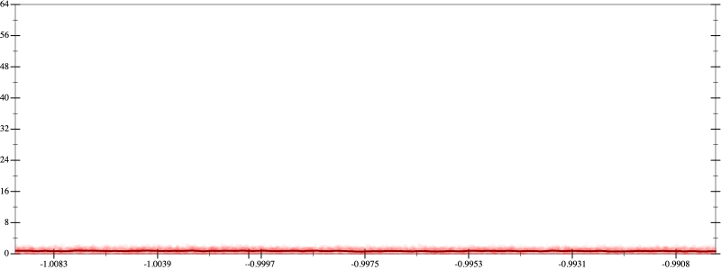
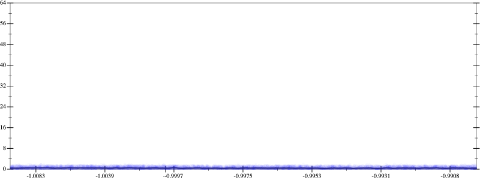

Initial program 0.7
\[\left(\left(\left(\left(\left(\left(\left(\left(\left(\left(\left(1.0 + -17.0 \cdot x\right) + 68.0 \cdot \left(x \cdot x\right)\right) + -113.333333 \cdot \left(\left(x \cdot x\right) \cdot x\right)\right) + 99.166667 \cdot \left(\left(\left(x \cdot x\right) \cdot x\right) \cdot x\right)\right) + -51.566667 \cdot \left(\left(\left(\left(x \cdot x\right) \cdot x\right) \cdot x\right) \cdot x\right)\right) + 17.188889 \cdot \left(\left(\left(\left(\left(x \cdot x\right) \cdot x\right) \cdot x\right) \cdot x\right) \cdot x\right)\right) + -3.85873 \cdot \left(\left(\left(\left(\left(\left(x \cdot x\right) \cdot x\right) \cdot x\right) \cdot x\right) \cdot x\right) \cdot x\right)\right) + 0.602927 \cdot \left(\left(\left(\left(\left(\left(\left(x \cdot x\right) \cdot x\right) \cdot x\right) \cdot x\right) \cdot x\right) \cdot x\right) \cdot x\right)\right) + -0.066992 \cdot \left(\left(\left(\left(\left(\left(\left(\left(x \cdot x\right) \cdot x\right) \cdot x\right) \cdot x\right) \cdot x\right) \cdot x\right) \cdot x\right) \cdot x\right)\right) + 0.005359 \cdot \left(\left(\left(\left(\left(\left(\left(\left(\left(x \cdot x\right) \cdot x\right) \cdot x\right) \cdot x\right) \cdot x\right) \cdot x\right) \cdot x\right) \cdot x\right) \cdot x\right)\right) + -0.00031 \cdot \left(\left(\left(\left(\left(\left(\left(\left(\left(\left(x \cdot x\right) \cdot x\right) \cdot x\right) \cdot x\right) \cdot x\right) \cdot x\right) \cdot x\right) \cdot x\right) \cdot x\right) \cdot x\right)\right) + 1.3 \cdot 10^{-05} \cdot \left(\left(\left(\left(\left(\left(\left(\left(\left(\left(\left(x \cdot x\right) \cdot x\right) \cdot x\right) \cdot x\right) \cdot x\right) \cdot x\right) \cdot x\right) \cdot x\right) \cdot x\right) \cdot x\right) \cdot x\right)\]
Applied simplify0.6
\[\leadsto \color{blue}{\left(\left(\left(\left(\left(x \cdot x\right) \cdot \left(x \cdot x\right)\right) \cdot \left({x}^{3} \cdot {x}^{3}\right)\right) \cdot \left(x \cdot -0.00031 + 0.005359\right) + \left(\left(\left(x \cdot x\right) \cdot \left(x \cdot x\right)\right) \cdot \left(\left(x \cdot x\right) \cdot \left(x \cdot x\right)\right)\right) \cdot \left(0.602927 + -0.066992 \cdot x\right)\right) + \left(\left(\left(\left(x \cdot x\right) \cdot \left(x \cdot x\right)\right) \cdot \left(99.166667 + -51.566667 \cdot x\right) + \left({x}^{3} \cdot {x}^{3}\right) \cdot \left(17.188889 + -3.85873 \cdot x\right)\right) + \left(\left(x \cdot x\right) \cdot \left(68.0 + -113.333333 \cdot x\right) + \left(x \cdot -17.0 + 1.0\right)\right)\right)\right) + \left(\left(1.3 \cdot 10^{-05} \cdot x\right) \cdot \left(x \cdot x\right)\right) \cdot \left(\left({x}^{3} \cdot {x}^{3}\right) \cdot {x}^{3}\right)}\]
Taylor expanded around 0 0.5
\[\leadsto \left(\left(\left(\left(\left(x \cdot x\right) \cdot \left(x \cdot x\right)\right) \cdot \left({x}^{3} \cdot {x}^{3}\right)\right) \cdot \left(x \cdot -0.00031 + 0.005359\right) + \left(\left(\left(x \cdot x\right) \cdot \left(x \cdot x\right)\right) \cdot \left(\left(x \cdot x\right) \cdot \left(x \cdot x\right)\right)\right) \cdot \left(0.602927 + -0.066992 \cdot x\right)\right) + \left(\left(\color{blue}{{x}^{4}} \cdot \left(99.166667 + -51.566667 \cdot x\right) + \left({x}^{3} \cdot {x}^{3}\right) \cdot \left(17.188889 + -3.85873 \cdot x\right)\right) + \left(\left(x \cdot x\right) \cdot \left(68.0 + -113.333333 \cdot x\right) + \left(x \cdot -17.0 + 1.0\right)\right)\right)\right) + \left(\left(1.3 \cdot 10^{-05} \cdot x\right) \cdot \left(x \cdot x\right)\right) \cdot \left(\left({x}^{3} \cdot {x}^{3}\right) \cdot {x}^{3}\right)\]
Applied simplify0.4
\[\leadsto \color{blue}{\left(\left(\left(1.0 + -17.0 \cdot x\right) + \left(x \cdot -113.333333 + 68.0\right) \cdot \left(x \cdot x\right)\right) + \left({x}^{4} \cdot \left(x \cdot -51.566667 + 99.166667\right) + \left({x}^{3} \cdot {x}^{3}\right) \cdot \left(17.188889 + -3.85873 \cdot x\right)\right)\right) + \left(\left(\left(\left(0.602927 + -0.066992 \cdot x\right) \cdot \left(\left(x \cdot x\right) \cdot \left(x \cdot x\right)\right)\right) \cdot \left(\left(x \cdot x\right) \cdot \left(x \cdot x\right)\right) + \left(\left(-0.00031 \cdot x + 0.005359\right) \cdot \left(x \cdot x\right)\right) \cdot \left(\left(\left(x \cdot x\right) \cdot \left(x \cdot x\right)\right) \cdot \left(\left(x \cdot x\right) \cdot \left(x \cdot x\right)\right)\right)\right) + \left(\left(1.3 \cdot 10^{-05} \cdot x\right) \cdot \left(x \cdot x\right)\right) \cdot {\left({x}^{3}\right)}^{3}\right)}\]
 
